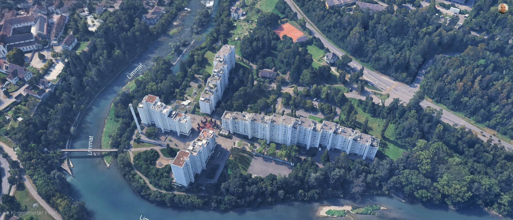
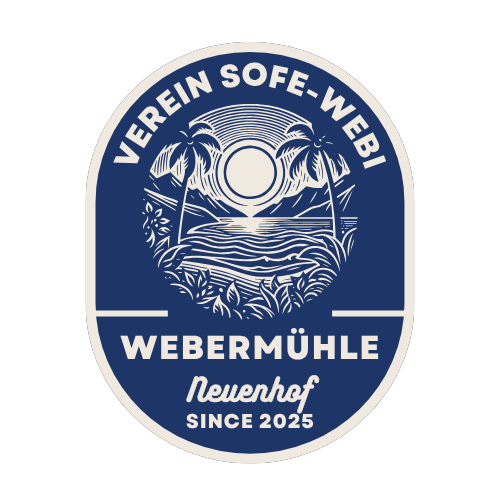
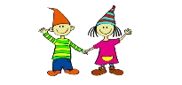
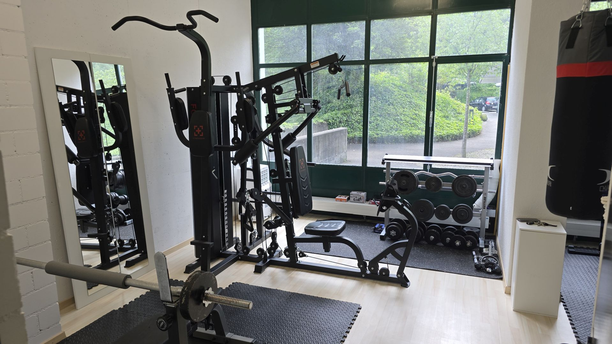

Einführung
Die Webermühle
Die Webermühle ist ein Quartier mit vielen Menschen, gemeinsamen Räumen und einem aktiven Miteinander. Diese Seite bündelt Informationen, Angebote und Erinnerungen aus dem Quartier.
Webermühle · Neuenhof
Ein Ort zum Wohnen, Begegnen und Mitgestalten – direkt an der Limmat.

Einführung
Die Webermühle ist ein Quartier mit vielen Menschen, gemeinsamen Räumen und einem aktiven Miteinander. Diese Seite bündelt Informationen, Angebote und Erinnerungen aus dem Quartier.
Vereine
Der Quartierverein und der Verein SOFE Webi engagieren sich auf unterschiedliche Weise für die Webermühle.
Quartierverein
Der Quartierverein verbindet Menschen, Ideen und gemeinsame Aktivitäten in der Webermühle.
Er unterstützt das Miteinander im Quartier, gemeinsame Räume, Informationen und auch grössere gemeinsame Aktivitäten.
Kontakt zum Quartierverein
Sommerfest
Der Verein SOFE Webi organisiert das Sommerfest in der Webermühle.
Mit dem Sommerfest schafft er einen gemeinsamen Anlass für Begegnungen im Quartier.
Kontakt zum SommerfestAngebote
Angebote für Familien, Bewegung und Alltag finden hier ihren Platz.

Familien
Die Spielgruppe Zwergmühle ist ein Angebot für Familien und Kinder im Quartier.
Informationen zu Ort, Leitung und Anmeldung werden übersichtlich ergänzt.
Kontakt zur Spielgruppe
Quartierladen
Der Persien Markt ist der Quartierladen direkt in der Webermühle.
Hier findest du orientalische Spezialitäten, frisches Brot, Lebensmittel, Gewürze, Getränke, Süsswaren und viele Artikel des täglichen Bedarfs.
Erinnerungen
Bilder, Geschichten und Erinnerungen aus der Webermühle finden hier nach und nach ihren Platz.
Historische Bilder und Geschichten zeigen, wie sich die Webermühle entwickelt hat.
Geschichte entdeckenMitgestalten
Ideen, Hinweise und gemeinsame Aktivitäten machen die Webermühle zu einem Ort, der sich weiterentwickelt.
Veranstaltungen entdecken